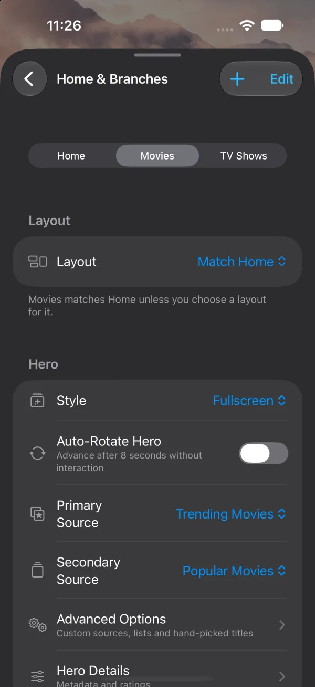
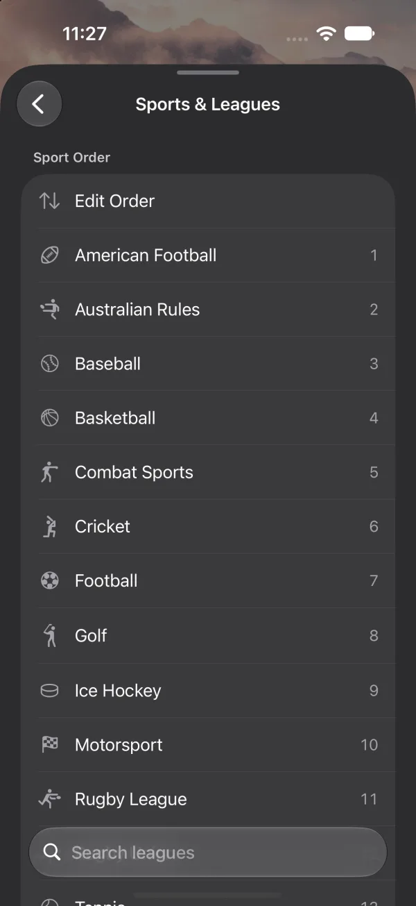
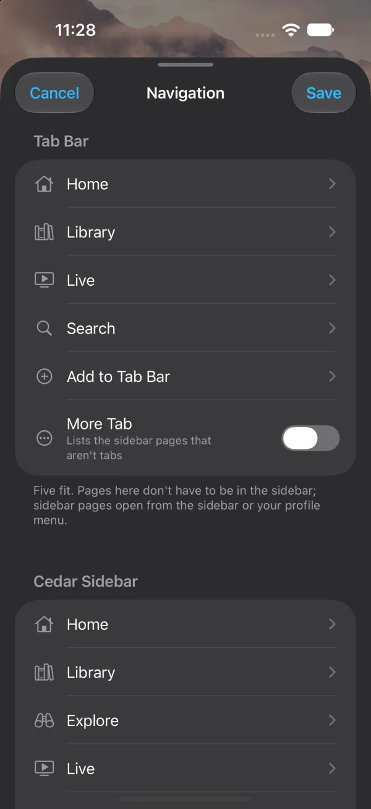

New
Movies and TV Shows pages
Give Movies and TV Shows their own hero, Branches, layout and IPTV categories, configured per profile in Settings › Home & Branches.

 CedarRelease notes
CedarRelease notes
External TestFlight · Apple devices Early beta · Android TV
Build 86 gives Movies and TV Shows their own customisable hero, Branches and layout, just like Home. You can paste public TMDB and Letterboxd list links or pick from twelve built-in MDBList charts without an account, arrange and hide leagues in the Sports Bar, and bring 24/7 Tobacco Tie live channels straight into Live TV. On iPhone, iPad and Mac, upcoming episodes and movie releases can sync to a dedicated Apple Calendar, while playback adds key-free Addic7ed TV subtitles and major player engine upgrades across every platform.
cedartv.github.io/cedar-tv-updates/apple/releases/1.0.0-build-86/
5 new
Give Movies and TV Shows their own hero, Branches, layout and IPTV categories, configured per profile in Settings › Home & Branches.

Paste any public TMDB or Letterboxd list link to add it as a Branch without an account, or choose from twelve built-in MDBList charts.
Reorder sports, pin favourite leagues to the top and hide leagues you never watch, saved with your profile on every device.

Import 24/7 channels from Tobacco Ties straight into Live TV alongside your playlists, with live, upcoming and replay status badges.
Sync upcoming episodes and movie releases into a dedicated Apple Calendar, with your choice of look-ahead window.
2 improved
The Tab Bar and Mac Toolbar now keep their own pages and order apart from the Cedar Sidebar, with the More tab optional.

My Teams Home Branches now show your teams’ upcoming games for the next seven days alongside live games and today’s results.
1 new, 3 improved
Actor and creator pages feature a hero backdrop, multi-role summaries, photo galleries and cleaner filmography grouping.
Anime titles can display AniList ratings alongside your other rating sources.
Viewing Stats caches past plays from connected Trakt, Simkl and MDBList accounts for fuller history and insights.
Bilingual provider titles and Arabic numerals match TMDB entries more reliably without losing diacritics or subtitles.
1 new, 2 improved
Replace empty No Event Scheduled guide slots with colour-coded blocks titled Channel Name, Live Broadcast or Local Programming.
Sports Bar and Sports Branch cards render full team matchup artwork matching Apple TV.
Repeated channels across groups keep separate entries, display names come from the playlist title, and Xtream live, movie and series paths are respected.
1 new, 4 improved
Search TV episode subtitles from Addic7ed with no API key required, toggled under Online Subtitles.
Auto-playing the next episode stays close to the resolution, HDR, release group and audio language you were already watching, and reads structured AIOStreams metadata.
One-shot Intro, Recap and Preview skip chips and direct Resume and Next Up syncing from Jellyfin, Emby and Plex arrive from Apple TV.
After a film or series ends, Watchlist and catalog recommendations rotate per title instead of repeating the same four cards.
Apple devices update AetherEngine to 7.72.0 with hardware bwdif deinterlacing, inverse telecine and MPEG-TS Dolby Vision; Android TV updates its audio decoder to FFmpeg 9.0.2.
1 new, 1 improved
Kids rating limits compare titles against your region’s own certification system rather than relying only on US ratings.
A one-time Home prompt after installing or updating invites adult profiles to join the Cedar Discord community.
5 fixed
3 known issues